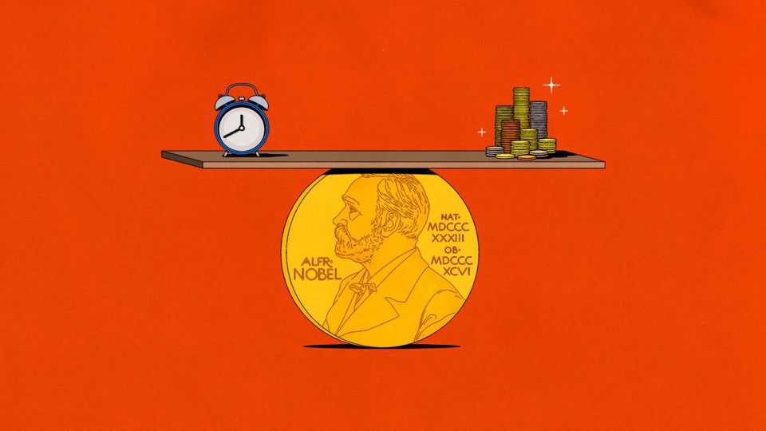

A Nobel prize for how to keep economies on even keel
Two “New Keynesians”, Robert Hall and Michael Woodford, win the highest honour in economics

Oct 15th 2026
How to stabilise an unstable economy? In much of the 20th century the Keynesians, followers of John Maynard Keynes, argued that the government could manage the overall level of demand. That would prevent a repeat of the mass unemployment of the Great Depression in the 1930s. The monetarists, led by Milton Friedman, retorted that the best approach was to fix the money supply. Attempts to boost employment would inevitably lead to ever-rising prices, as in the Great Inflation of the 1970s.
Nowadays most central bankers would place themselves in a third camp, known as New Keynesians. On October 12th the Nobel memorial prize, the top gong in economics, was awarded to two of that movement’s leading lights. The glory (and SKr12m, or $1.2m) will be shared by two Americans, Robert Hall of Stanford University and Michael Woodford of Columbia University. Mr Hall is best known for his theory of consumer spending and Mr Woodford for modelling how central banks could use interest rates as the main tool to keep the economy steady.
The prize committee credited the duo with rebuilding macroeconomics on “microfoundations”: representing economic outcomes as the result of the behaviour of individuals and businesses. That was an intellectual break from the past. The Keynesians and monetarists built their models top-down, looking at how those aggregates, in the form of economic statistics, influenced each other (how the total volume of money changed the rate of inflation, say). New Keynesians tried to rebuild the models bottom-up from individual decision-making. This followed a critique by Robert Lucas, the Nobel laureate in 1995, that any model not based on the deep features of an economy would be a poor guide for policymakers.
For Mr Hall this meant examining how consumers choose to spend their money. In his model they have views about their future income. Will they get a pay rise? Is a sudden windfall just a passing bit of luck? Because they care about tomorrow as well as today, they “smooth” spending and react to changes in what they see as their lifetime spending power. Track a person’s consumption over time and it should resemble a drunk walking home, randomly straying hither and thither—in response to unforeseen jolts—but staggering in the same general direction.
Mr Woodford looked to Knut Wicksell, a Swedish economist at the turn of the 20th century (he calls his theories “neo-Wicksellian” rather than New Keynesian). Wicksell started from a model of a “pure credit economy” in which all money is created by banks making lending decisions. If interest rates were below a “natural” rate of return on investment, businesses would keep borrowing, leading to an inflationary boom. If rates were above this level, that would cause a deflationary cycle. Rather than fine-tune the economy, as the old-style Keynesians suggested, or the money supply, central banks should strive to bring interest rates in line with this natural rate of return. This rate would emerge not from their choices but from things like technological progress and savers’ willingness to wait to see their investments pay off.
Mr Woodford’s book, “Interest and Prices”, became the bible for many modern central bankers. It built a model of the economy using ideas such as “sticky prices” (the notion that firms do not adjust how much they charge consumers too often) and “imperfect competition” (which allows prices to be sticky). Its publication in 2003 coincided with neither a Depression nor a Great Inflation but with the Great Moderation, a happy spell of low inflation, steady growth and reduced economic volatility.
There are niggles. The natural rate of return can shift in short order: a boom in investment for a new technology can raise demand for capital (as is happening with artificial intelligence), calling for a higher neutral rate of interest. And this neutral rate cannot be observed. Jerome Powell, a former chairman of the Federal Reserve, once quipped that central bankers could only “know it by its works”. Nor do the models account for the financial sector or the influence of interest rates on investors’ tolerance for risky bets. The Great Moderation ended in the financial crisis of 2008.
Mr Hall’s model of consumption, too, presents problems. Rational forward-looking consumers ought to change their spending patterns only in response to unexpected news about their lifetime income, and save sudden windfalls (like covid stimulus cheques) lest they are offset by some future sudden costs. In reality, people often overreact to windfalls and underreact to persistent economic changes. And random “shocks” may in fact carry useful information: a one-off prize, like the Nobel, might presage a future of lucrative speaking gigs, for instance. Even for prize-winning economists, it can be hard to extract the signal from the noise.
The Nobel arrives as Mr Woodford’s framework comes under new theoretical pressure. The neo-Wicksellian advice to central banks is to communicate in advance what they would do in response to a boom or bust. The market can then anticipate interest rates in real time—and it can do so better the more a central bank reveals about its “reaction function”. Yet the Fed’s new chair, Kevin Warsh, worries that this leads to a “hall of mirrors” in which markets watch the central bank and the central bank watches markets. A bit of uncertainty about how rates change is good, he argues.
Then there is the new economic reality. Central bankers are coping with supply-side shocks from a pandemic to wars in Ukraine and now Iran. High debt burdens in rich countries raise the spectre of interest rates being used to manage the cost of borrowing rather than inflation. Rate-setters must make uncomfortable decisions about how much inflation and joblessness to tolerate in order to keep the economy stable. New Keynesian theory is one thing; the practice of political economy is quite another.■